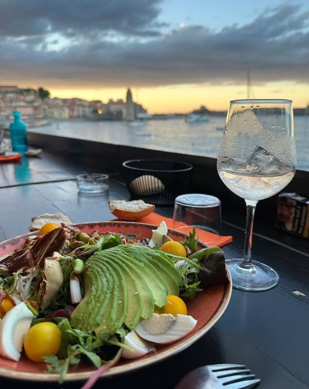
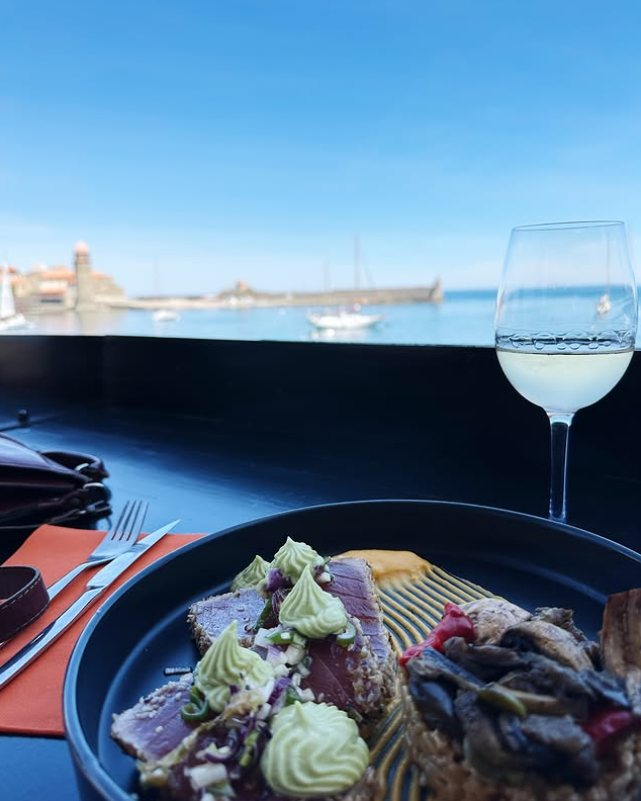
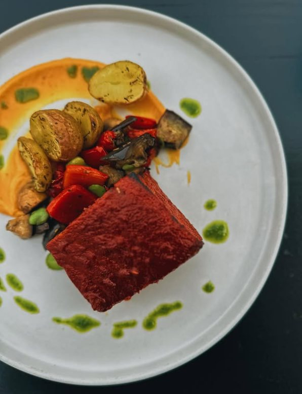
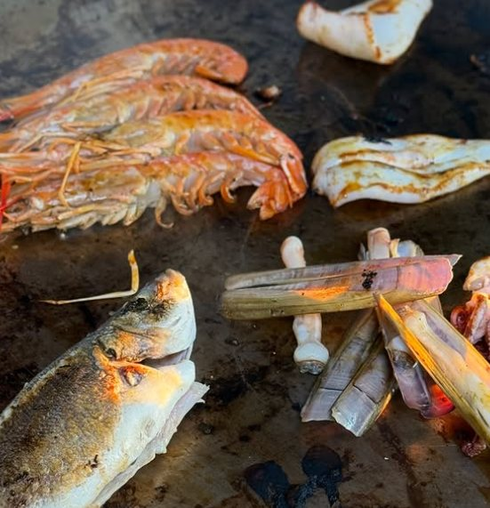
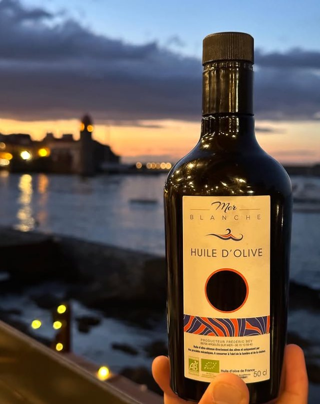

01
Le matin
Petit-déjeuner et café en terrasse dès 8h, les pieds presque dans l'eau, pendant que le village s'éveille.

Cuisine catalane et méditerranéenne, servie sur des terrasses étagées au-dessus de la baie. Ici, chaque assiette suit la lumière, du premier café au dernier verre face au couchant.

À La Voile, la Méditerranée n'est pas un décor : c'est le garde-manger. Les pêcheurs de Collioure, les maraîchers du Roussillon et les vignerons de Banyuls dessinent une carte qui change avec les saisons et la marée.
On y vient pour la fraîcheur des produits, le geste juste en cuisine et cette vue qui transforme un déjeuner en souvenir. Le soir, les terrasses s'illuminent et le service prend des airs de fête.
Notre histoire & notre carte →Une journée entière au bord de l'eau, rythmée par la lumière de Collioure.
Petit-déjeuner et café en terrasse dès 8h, les pieds presque dans l'eau, pendant que le village s'éveille.

Une cuisine méditerranéenne raffinée : poissons de petits bateaux, légumes du Roussillon, accents catalans.

L'apéritif au Balco del Mar, cocktails et bulles face à l'horizon qui s'embrase. Place à la fête.

« L'une des plus belles vues de Collioure, et une assiette à la hauteur du panorama. »
Avis voyageurs · 4,4 / 5

Concerts live, DJ sets au coucher du soleil, fête de l'anchois… Collioure se vit aussi le verre à la main, au son de la musique, face à la mer.
Voir l'agenda
Les terrasses se remplissent vite, surtout au coucher du soleil et le week-end. Réservez pour être sûr d'avoir la plus belle place.